GUIDE
図を動かして、式を確かめる
ゲーム制作チームからの依頼を読み、何を変えるか、どの数値を見れば確認できるかを先に整理します。アニメーションの再生だけで学習完了にはなりません。課題条件・完成条件・提出物はワークブックを参照してください。
中学校の内容から始める
B01 正負の数から始めます。「図で確かめる内容」で、正負の数・分数・平方根・HP計算を選べます。数直線の−3から右へ5進むと、0を越えて2へ着きます。「正の位置から左へ」の例と見比べてください。
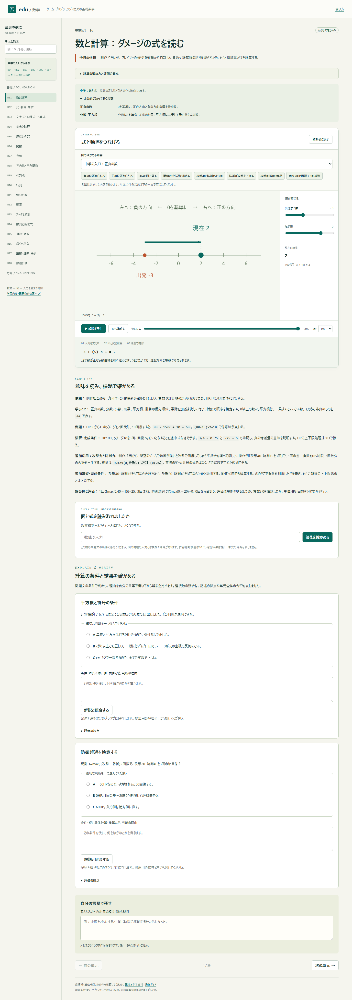
中学の入口は、数と計算 → 割合 → 方程式 → 座標 → 比例・反比例 → 図形 → 場合の数 → 確率 → データの順で進められます。各単元の「先に確認」から、必要な内容へ戻れます。
B03 方程式では「3x+2=20を解く」の操作例を選び、再生位置を動かします。両辺から2を引く前後、両辺を3で割った後を比較し、等しさが保たれることを確認します。選択欄では連立方程式・二次方程式・回復時間の逆算にも切り替えられます。
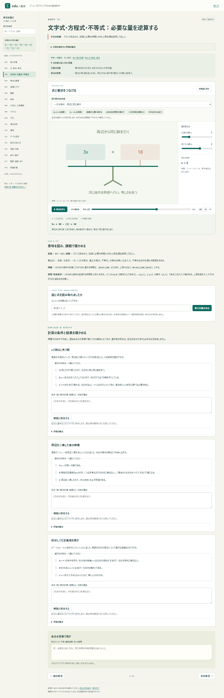
B07 図形では、直角三角形の辺を変え、3辺の正方形の面積を比べます。相似の長さと面積の関係、円の接触にも切り替えられます。
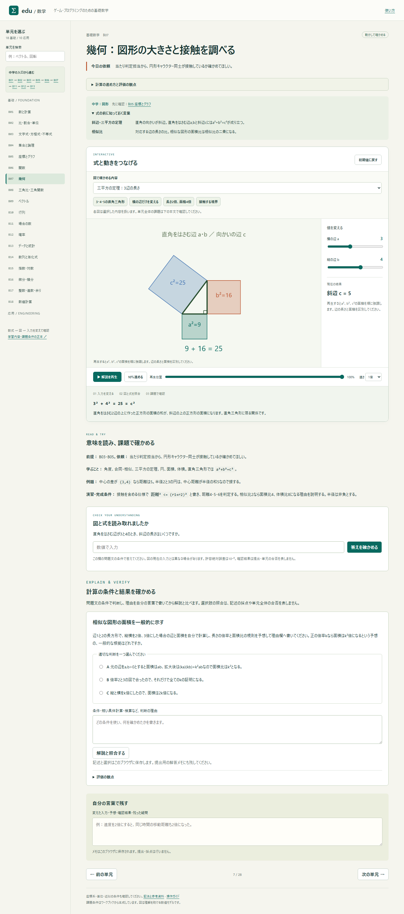
1. 単元を選び、依頼を読む
ベクトルの単元を例にします。左の一覧から単元を選びます。スマートフォンでは「単元を選ぶ」を開くと一覧が表示されます。検索欄には「回転」「クォータニオン」などの言葉も入力できます。
見出しの下にある「今日の依頼」を読みます。何に困っているか、今回の変更対象は何かを確認します。
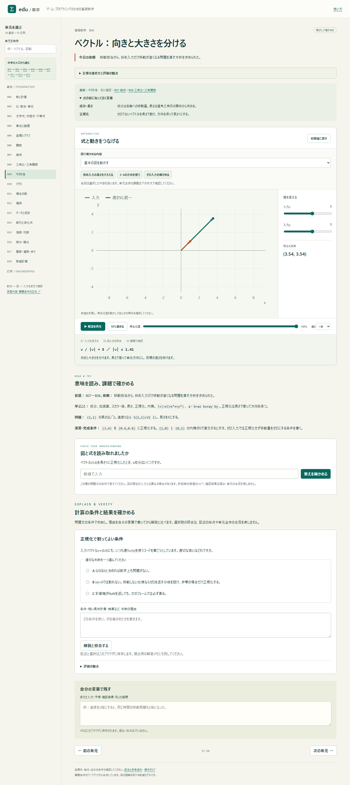
2. 値と再生位置を変える
「値を変える」のスライダーで入力を変更します。「解説を再生」を押すと再生位置が進み、式・数値・図が更新されます。再生中は「一時停止」で止められます。「10%進める」または「再生位置」のスライダーでも進み具合を変えられます。100%から段階送りすると0%へ戻ります。
例えばA04 回転の補間を開き、開始350°・終了10°のまま、再生位置を50%にします。角度を直接補間した方向と、SLERPで補間した方向を見比べます。「初期値に戻す」は選択中の図の入力を初期値へ戻し、再生位置を0%にします。
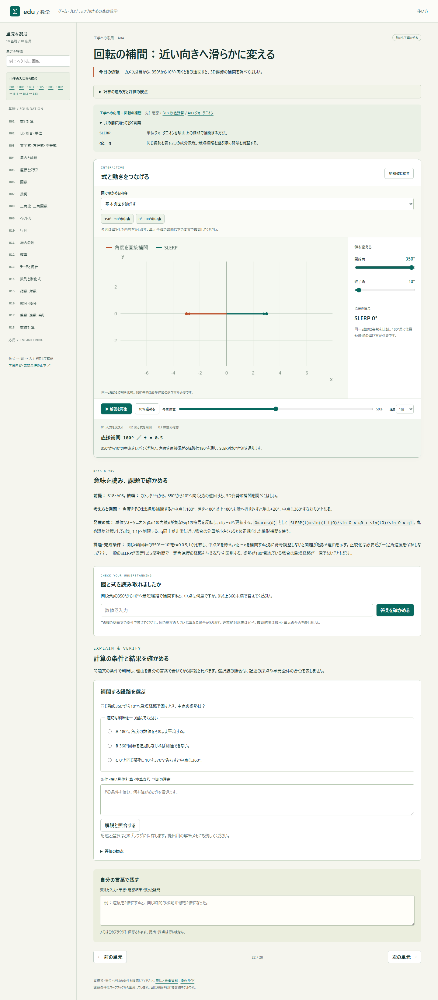
キーボード：Tabで操作対象へ移動し、スライダーは左右の矢印キーで変更できます。Homeは最小値、Endは最大値です。再生は自動では始まりません。動きが負担になる場合は再生せず、再生位置を手動で変えてください。
3. 特殊な入力と比較する
A02 ジンバルロックではpitchを90°にしたときと45°にしたときを比較します。基準の姿勢との差と、軸の内積を見てください。軸が重なることと、物体そのものが回転不能になることを区別します。
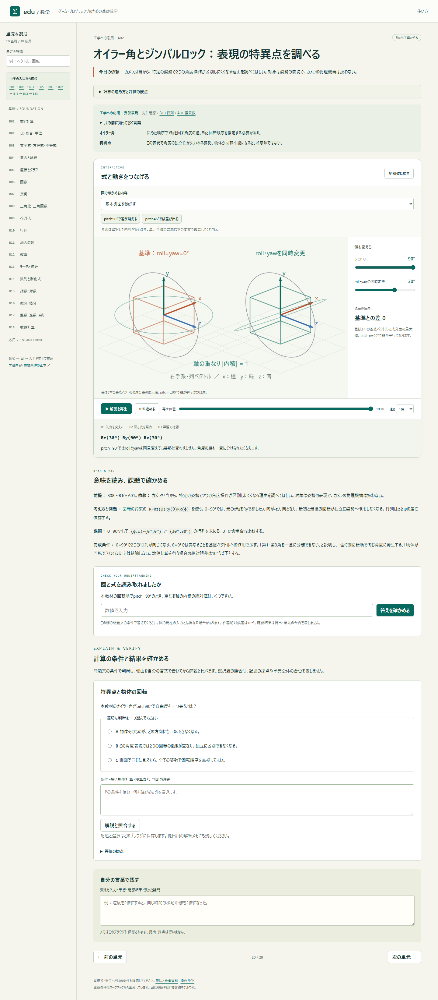
A06 数値積分では時間刻みを変えて、解析式と2種類の積分法との差を比較できます。グラフは数式に基づくモデルで、ゲームエンジンの実測結果ではありません。
4. 課題を解き、結果を残す
図の下の「意味を読み、課題で確かめる」で、例題・課題・完成条件を読みます。入力を変える前に予想を書き、結果と比べます。下のメモ欄は単元別に、このブラウザへ保存されます。保存できない場合は欄の下に通知が出ます。
メモは提出や自動採点の機能ではありません。ブラウザのデータを消すと失われるため、提出用の解答メモへコピーしてください。次の単元へ進むには下の「次の単元」を使います。
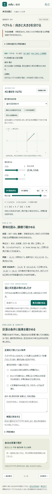
5. 計算の条件と結果を検証する
各単元の上部にある「計算の進め方と評価の観点」を開くと、手計算と計算機の使い分け、式変形、予想と証明、誤差の考え方を読めます。速く入力することや問題数をこなすことだけを目的にしません。
B03 方程式などにある「計算の条件と結果を確かめる」では、問題文を読み、選択肢を一つ選び、判断の理由を書きます。図の現在の値とは別に、問題文で指定された条件を使ってください。
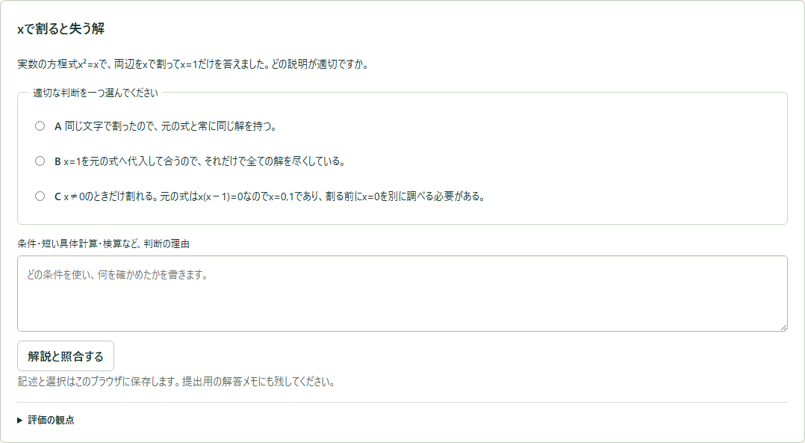
理由を記述して「解説と照合する」を押します。「評価の観点」を開き、自分の説明に条件・計算・検算が含まれるか点検してください。空欄のままでは照合できません。選択が一致しても、記述を採点したとは表示しません。記述と選択はこのブラウザに保存され、保存できない場合は欄の下に通知が出ます。提出用の解答メモにも残してください。
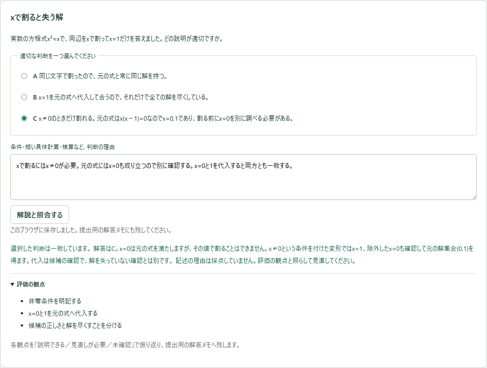
B18 数値計算で「u=0.02で誤差を調べる」を選ぶと、平方根の近似による誤差、誤差上界、許容値を比較できます。「u=1では近似が粗い」と見比べ、近似を使える条件を説明してみてください。A06では時間刻み、A10では絶対誤差の許容値も変えられます。
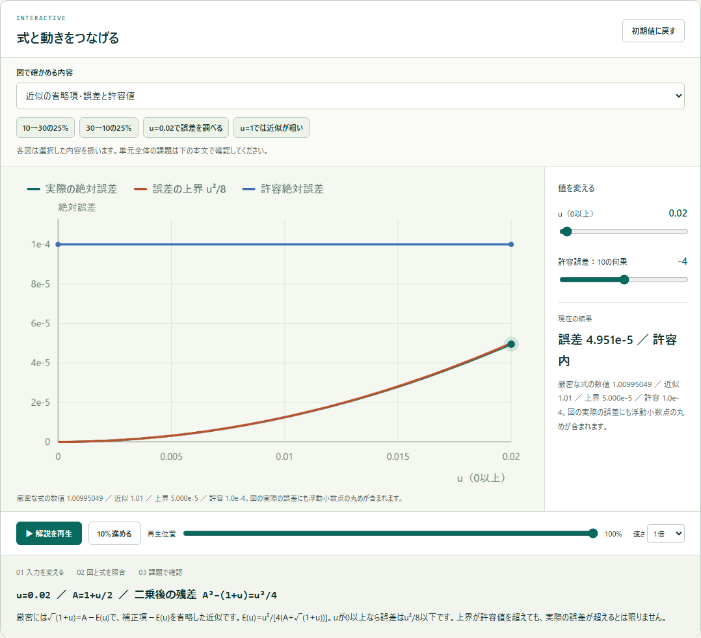
6. ゲームと生活の題材を切り替える
B01で「攻撃40・防御15を3回」を選びます。再生位置を動かすと、攻撃と防御の差、0への制限、回数分の合計の順に強調されます。「防御が攻撃を上回る」と比較し、攻撃で回復しない規則を確かめます。各段階の値は確定値を表示します。
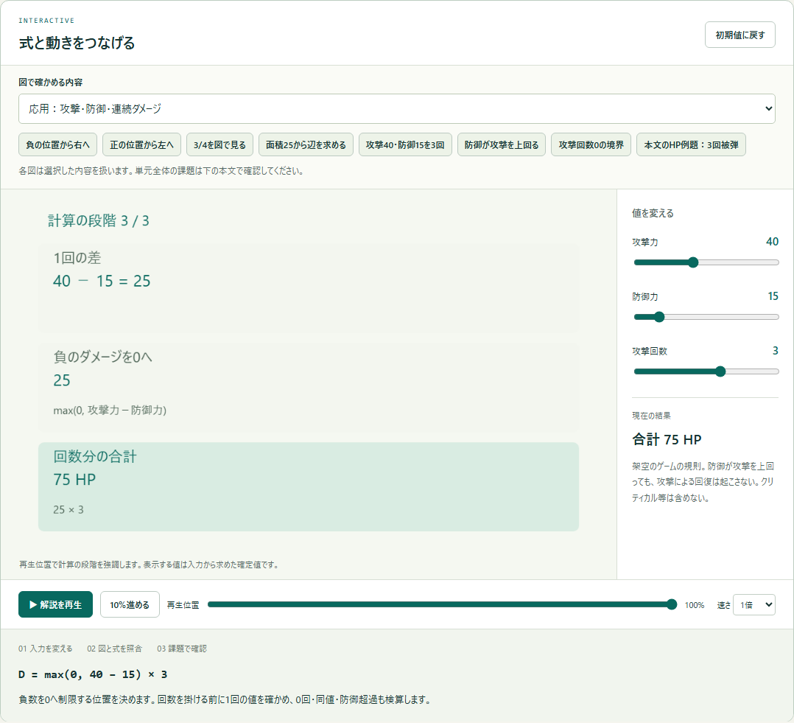
B02で「2人分300gを5人分へ」を選び、作る人数を変えます。人数の倍率と必要なgを比較してください。鍋の直径や加熱時間は、この比例の対象に含めていません。
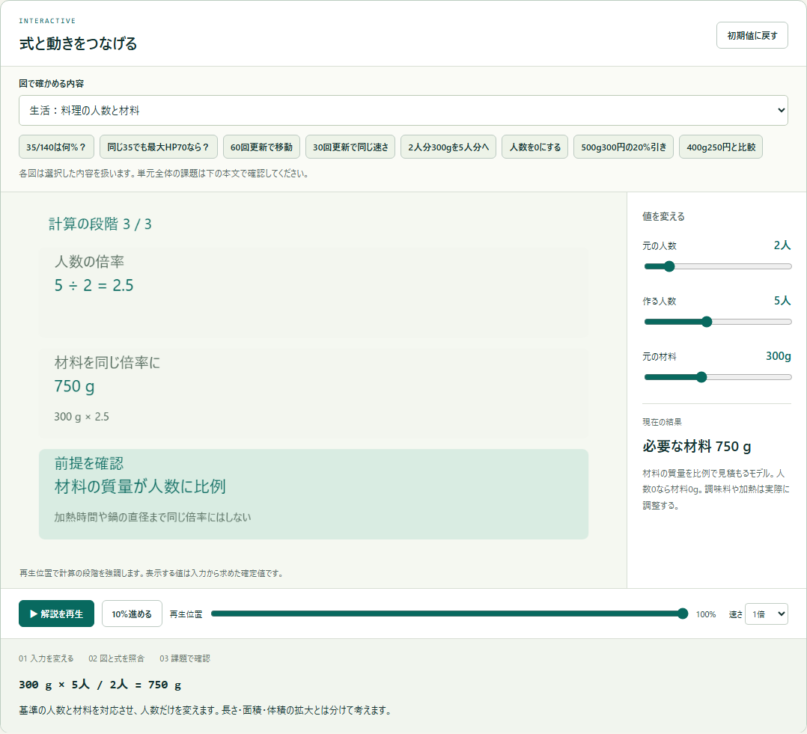
同じB02で「500g300円の20%引き」と「400g250円と比較」を切り替え、割引後の支払額と100g単価を読みます。割引率を0%・100%にして境界も調べられます。
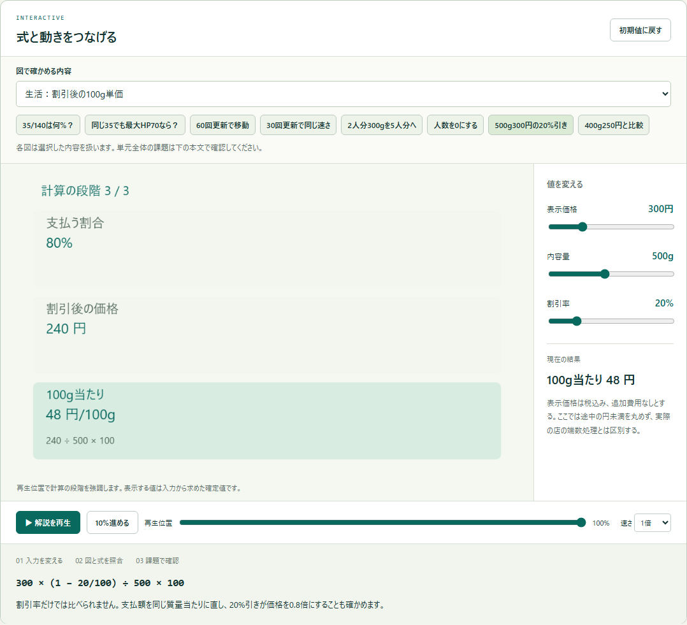
B12の「1%で100回：1/eと比較」を選びます。再生位置で試行回数を進め、厳密な外れ確率、expによる近似、1/eの線を比較します。結果欄は「1回以上の成功確率」です。説明欄の成功個数の期待値・平均待ち回数とは分けて読みます。「50%で2回：近似に注意」「成功確率0%の境界」も試してください。
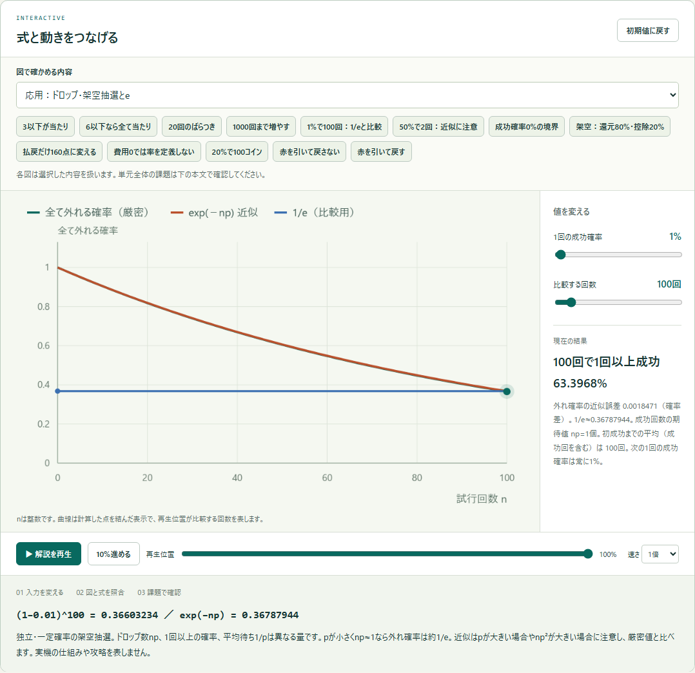
「架空：還元80%・控除20%」から「払戻だけ160点に変える」へ切り替えます。総払戻と費用を分け、期待収支と理論還元率がどう変わるか読みます。「費用0では率を定義しない」も確認できます。実機・現金・攻略のシミュレーターではありません。
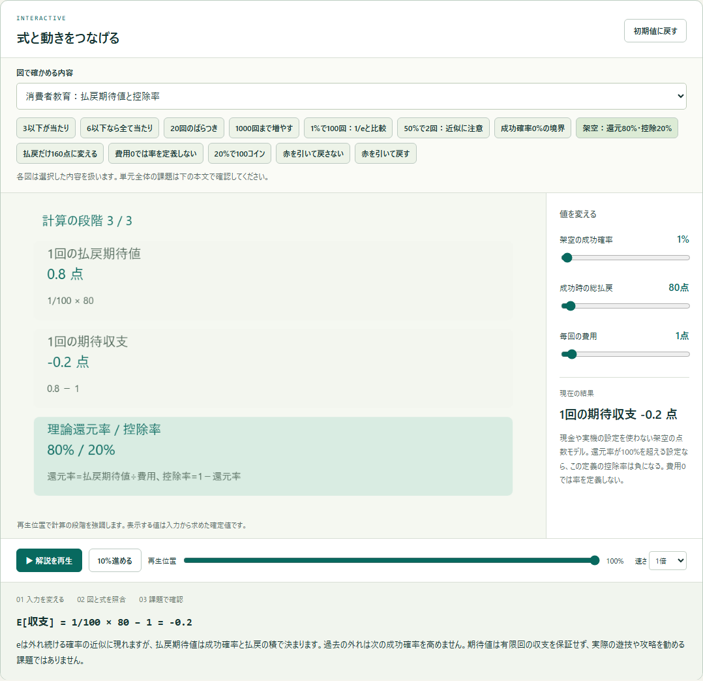
B15で「子40符3翻ロン」を選び、基本点・支払額・受取合計を再生します。「子30符4翻：切り上げ満貫」「子25符3翻ツモ」「13翻でも三倍満」「20符ロンは対象外」と比較してください。親とツモは1、子とロンは0で切り替えられます。入力する翻は場ゾロを除きます。単独役満は別の図で選べます。
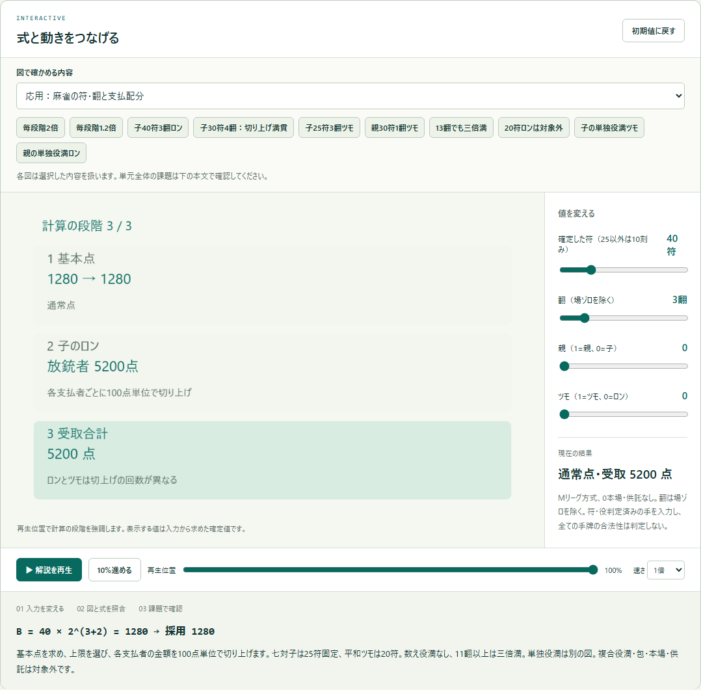
B17で「8Mb/sを10分保存」を選び、秒・bit・byte・MB/MiBへ換算する段階を進めます。「時間を20分にする」と比較し、容量の倍率と単位を確認します。
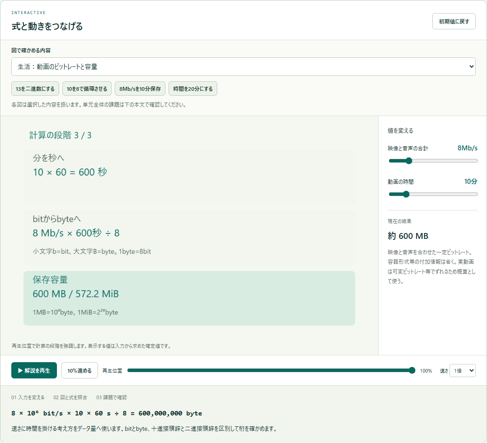
課題と解答・評価の条件は各単元の本文を参照してください。題材の前提と一次資料も確認できます。